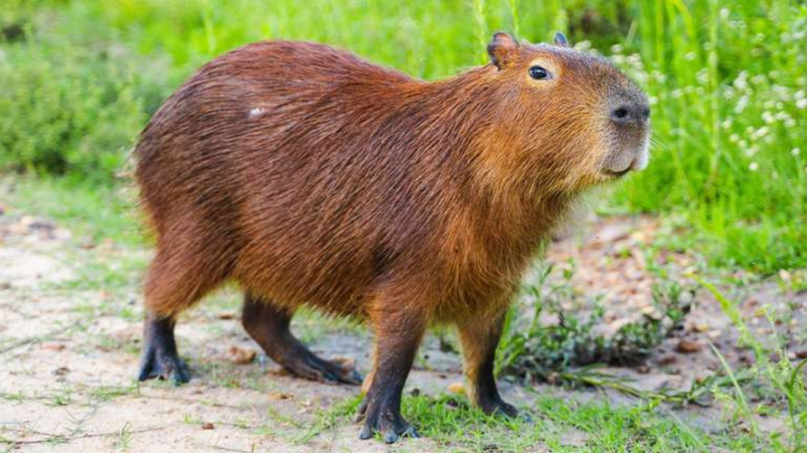

 Tiene un cuerpo pesado en forma de barril y una cabeza pequeña, con un pelaje pardo rojizo en la parte superior del cuerpo que se vuelve pardo amarillo. En su parte inferior suele encontrarse pelaje con puntos o petequias en el lomo. Puede crecer hasta 1,30 m de largo y llegar a pesar 65 kg. Presenta pies ligeramente palmeados y al igual que los puercos carece de cola y tiene 20 dientes. Sus patas posteriores son algo más largas que las anteriores, y los hocicos son romos, con ojos, narinas y orejas en la parte superior de la cabeza. Las hembras son un poco más pesadas que los machos